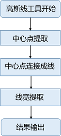
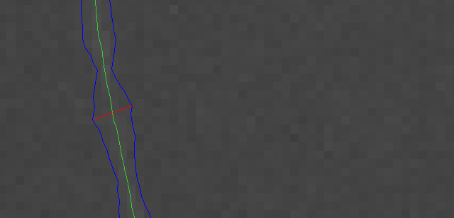
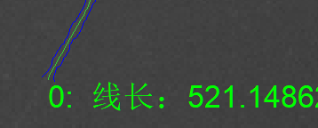
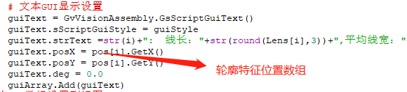

检测图像中的线状缺陷，并计算其长度、宽度等关键信息 。
玻璃划痕等线类检测。
高斯线工具的基本原理如图所示。其主要内容包括线条中心点提取、中心点连接成线、线宽提取和结果输出。

中心点提取：目的是对输入图像中线条的中心进行计算提取。使用高斯平滑内核的偏导数来计算得到中心点（x,y），sigma参数为平滑系数，较大的值会使图像更加平滑，但中心点的定位会更差。
中心点连接成线：目的是将提取到的中心点连接成线条。高低阈值为图像的二阶导，用来对中心点进行筛选，如果图像的二阶导>高阈值，该点直接连在线条上；如果图像的二阶导<低阈值，该点舍弃；如果图像二阶导介于两者之间，则通过内部阈值判断该点是否连接到线条上。如果在相交的线条出现断开的情况下，可以通过“线扩展”功能，算法会试图使断线自动连接。
线宽提取：目的是计算每条线对应的线宽。通过求取每条线对应的边缘位置，计算得到线宽。其中检测模式会对线条位置和线宽自动进行偏差纠正，除‘none’以外的参数，工具会补偿非对称线条（即在线条的中心两侧有不同对比度的线条），自动校正后输出线条位置和宽度。
结果输出：目的是对所检测出来的候选结果进行输出。其中最小线长和最大线长参数可以对检测出的线条进行筛选，输出希望得到的线条。
注：在选择高低阈值时，其取决于线条的对比度、线宽以及sigma值。高低阈值与对比度成线性关系，即对比度越大，选高低阈值越大；对于线宽，呈现反线性关系，即线越宽，选高低阈值越小；同样对于sigma，sigma值越大，选高低阈值越小。一般来说：低阈值为高阈值对的1/3，低阈值越小，线条将会延伸到对比度较低的区域，即线条越长。反之，低值越高，线条越短，但越突出。
初级参数设置：可通过待检测缺陷的大小及灰度值进行参数设置；初级参数设置后可自动计算出专家参数，实际参与检测运算的为专家参数；
最大/最小线长：根据实际检测要求进行设置，用于过滤不需要的检测特征；当只对高斯线长下限做设置时，可设置最小线长参数，同时将最大线长设置为0；
轮廓平均线宽结果数组、轮廓最大线宽结果数组、轮廓最小线宽结果数组、轮廓线长结果数组：四个结果数组为检测结果，数组大小与检测结果个数相同，使用相同索引号可获取每个高斯线相应的线宽信息及线长信息；


脚本编写：

无
| 参数名称 | 参数说明 |
|---|---|
| 输入图像 | 待检测图像，只支持链接灰度图； |
| 二维线性变换 | 目标相对于模板的平移、旋转、缩放变换； |
| ROI类型 | 工具执行检测的区域，分为3种：整幅图像、矩形ROI、圆形ROI； |
| 参数模式 | 两种参数模式：初级参数和专家参数；选择“初级参数”，可以设置“检测线宽”、“高对比度”和“低对比度”三个参数；选择“专家参数”，可以设置“Sigma”、“高阈值”和“低阈值”三个参数； |
| 检测线宽 | 初级参数；待检测缺陷的线宽大小，用于估计 Sigma，单位：像素；取值范围(0.0, 99999.0)；此值是个估算值，与待检测缺陷的线宽近似即可，若缺陷线宽大小不一，可设置为中间值；同时需要注意的是若待检测缺陷的线宽差别太大，则工具不易同时检测出两种宽度的缺陷，需单独各自进行检测； |
| 高对比度 | 初级参数；缺陷线条与附近背景的灰度值之差最高值，用于估计高阈值；取值范围[低对比度, 255.0]； |
| 低对比度 | 初级参数；缺陷线条与附近背景的灰度值之差最低值，用于估计低阈值；取值范围[0.0, 高对比度]；注：当低对比度为 0 时，默认低对比度为高对比度的 1/3； |
| Sigma | 专家参数；高斯平滑系数，取决于线宽；线宽越大，相应的 sigma 设置越大；取值范围(0.0, Min(图像长/4，或图像宽/4))；推荐取值范围[0.7, 20.0]；建议值：1、 1.2、 1.5、 1.8、 2、 2.5、 3、 4、 5；未链接图像时，取值范围(0.0, 30.0]； |
| 高阈值 | 专家参数；大于此阈值的点保留；取值范围[低阈值, 99999.0]；推荐取值范围[0.0, 35.0]；建议值：0、 0.5、 1、 2、 3、 4、 5、 8、 10； |
| 低阈值 | 专家参数；小于此阈值的点过滤；取值范围[0.0, 高阈值]；取值范围[低阈值, 99999.0]；推荐取值范围[0.0, 20.0]；建议值：0、 0.5、 1、 2、 3、 4、 5、 8、 10； |
| 检测模式 | 可选模式：bar-shape、none；bar-shape代表工具会通过补偿非对称线条（即在线条的中心两侧有不同对比度的线条）来校正提取出的线条的位置和宽度； |
| 最大线长 | 线长大于该值的线条被过滤（值为 “–,—-” 时，不限制）；取值范围[最小线长, 99999.0]； |
| 最小线长 | 线长小于该值的线条被过滤（值为 “–,—-” 时，不限制）；取值范围(0.0, 最大线长]； |
| 亮暗模式 | 可选模式：“亮线”、“暗线”； |
| 是否开启线宽检测 | 可选模式：“是”、“否”；选择“是”，执行高斯线宽估计，输出线宽结果：平均线宽结果、最大线宽结果、最小线宽结果；选择“否”，不执行高斯线宽估计并输出线宽结果； |
| 是否开启线拓展 | 可选模式：“是”、“否”；选择“是”，尝试对断连的线条进行连接；选择“否”，则不进行连接； |
| 是否显示线宽区域 | 可选模式：“是”、“否”；选择“是”，显示检测结果的线宽区域；选择“否”，则不显示；注：必须将参数“是否开启线宽检测”设置为“是”时，此参数才生效； |
| 是否显示最大线宽区域 | 可选模式：“是”、“否”；选择“是”，显示检测结果的最大线宽区域；选择“否”，则不显示；注：必须将参数“是否开启线宽检测”设置为“是”时，此参数才生效； |
| 开启并行运算 | 是否开启并行运算，选择是时，算法将开启OpenMp并行计算方式，可以提升计算速度，但可能出现耗时不稳定的情况，选择否时，算法将关闭OpenMp并行计算。 |
| 线程数百分比 | 设置并行运算的线程数百分比，有效范围为 (0, 0.75]，对应表示(0%, 75%]百分比范围。 |
| 参数名称 | 参数说明 |
|---|---|
| 输入图像 | 输入图像宽度、高度、像素大小； |
| 结果个数 | 检测到的高斯线数量； |
| 轮廓特征位置数组 | 检测到的每条高斯线的位置；此参数用于将相关结果显示在图像缺陷（检测到的高斯线）位置处； |
| 轮廓平均线宽结果数组 | 检测到的每条高斯线的平均线宽； |
| 轮廓最大线宽结果数组 | 检测到的每条高斯线的最大线宽； |
| 轮廓最小线宽结果数组 | 检测到的每条高斯线的最小线宽； |
| 轮廓线长结果数组 | 检测到的每条高斯线的线长； |
| 拟合高斯线 | 检测到的高斯线特征，用于显示在视图上； |
| 线宽区域 | 检测到的高斯线线的线宽区域，用于显示在视图上； |
| 最大宽度区域 | 检测到的高斯线的最大线宽区域，用于显示在视图上； |
| 执行结果 | 工具执行结果； |
| 执行时间 | 工具执行时间； |
参见“\Samples\高斯线检测工具.gvp”。